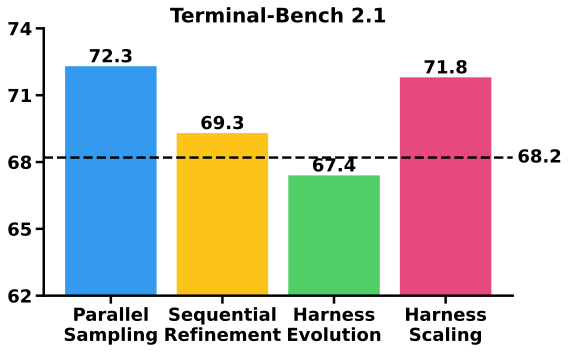
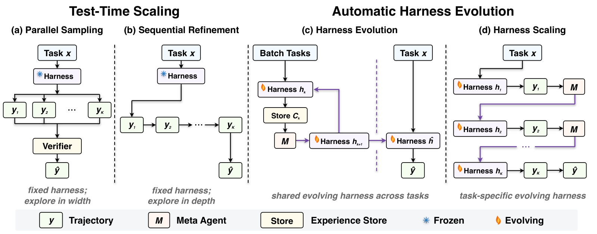

Rethinking the Evaluation of Harness Evolution for Agents
Paper: arXiv 2607.12227 (v1, Jul 14 2026), by Yike Wang, Huaisheng Zhu, Zhengyu Hu, Yige Yuan, Zhengyu Chen, Shakti Senthil, Hannaneh Hajishirzi, Yulia Tsvetkov, Pradeep Dasigi, Teng Xiao — Allen Institute for AI / University of Washington (+ independent). Blog and code on the project page. Grounded in the full arXiv HTML text and the project page.
TL;DR
- The evaluation critique for automatic harness evolution: current methods (Meta-Harness, AHE, AEVO) run an iterative search loop — rollout, analyze failures, revise the harness, repeat — using unit-test feedback from a public benchmark, then report final performance on the same benchmark. That conflates better harness design with (a) plain test-time search and (b) test-set adaptation.
- Under matched feedback and inference budgets (K=5) on Terminal-Bench 2.1 with Claude Opus 4.6, GPT-5.4, and GPT-5.4 mini, harness evolution loses to simple test-time scaling in every setting: without unit tests it averages 67.4 pass@1 — below the 68.2 direct-sampling baseline (GPT-5.4 crashes 75.3 → 69.7) while parallel sampling reaches 72.3; with unit tests, parallel sampling wins pass@1 (86.0 vs 75.8) and sequential refinement wins pass@5 (91.8 vs 86.2).
- The generalization test is the kill shot: evolve on 45 training tasks, select on 10 validation tasks, evaluate on 34 held-out tasks — the evolved harness gains +1.2 (Opus 4.6), +0.0 (GPT-5.4), average +0.6 over the initial harness. In the paper's words, edits "memorize fixes rather than distilling strategies."
Why this matters
This is the central skeptic of your harness-optimization thread — the paper that Part C of the team walkthrough (harness-optimization) leans on — and it should be read as the null hypothesis against which every self-evolving-harness result in this tracker is tested. The framing that survives contact with its tables: self-evolving harness loops are, as evaluated today, largely covert test-time scaling — an iterative search procedure whose gains come from repeated sampling with verifier feedback plus adaptation to the evaluation instances, both of which simpler baselines buy more cheaply. (The blog's own phrasing: "much of the reported gain appears to come from repeated sampling and adaptation to the evaluation tasks, not from genuinely better harness design.")
The methodological move is the durable contribution. By putting parallel sampling, sequential refinement, harness evolution, and a new control — harness scaling (per-instance harness adaptation) — under one budget accounting of what feedback each method sees and what it is allowed to modify, the paper turns "does harness evolution work?" into a measurable decomposition: reusable-artifact gains show up only in the held-out split, and search gains show up everywhere. Any harness-evolution paper that reports search-set numbers without this decomposition is now under-evidenced by default.
The core idea
Harness evolution and test-time scaling spend the same currency — extra rollouts with feedback — on different objects. Parallel sampling spends it on independent trajectories; sequential refinement on trajectory revisions; harness evolution on shared harness updates across a task batch; harness scaling on per-task harness updates. If harness evolution's advantage is real, it must (1) beat the trajectory-level methods at matched budget K, since it claims to convert the same feedback into a better policy context rather than just another attempt, and (2) produce an artifact whose gains survive on tasks it never searched on. The paper tests both, and both fail.

Figure 1 from the paper: without unit tests, harness evolution (67.4) lands below the initial-harness baseline (dashed, 68.2); parallel sampling leads at 72.3.How it works
Common protocol. Policy \(\pi_\theta\), task \(x\sim\mathcal{X}\), harness \(h\); a trajectory \(y\sim\pi_{\theta}(\cdot\mid x;h)\); outcome \(R(y,g)\in\{0,1\}\) when a unit test \(g\) exists; budget \(K{=}5\) everywhere; a summarization map \(\Phi\) (AHE's Agent Debugger, run by the same model) distills trajectory stores into consumable evidence. All four methods start from the identical minimal harness \(h_1\): a bash tool and a basic prompt — no skills, middleware, or memory.
The four arms. Parallel sampling draws \(y_1,\dots,y_K\sim\pi_\theta(\cdot\mid x;h)\) and selects by self-judge \(\hat{y}=\arg\max_{k}J(y_k)\) (no tests) or by oracle acceptance (with tests). Sequential refinement conditions each attempt on a summary of the last, \(y_{k}\sim\pi_{\theta}(\cdot\mid x,\Phi(y_{k-1});h)\). Harness evolution runs the shared loop: rollouts across a task batch accumulate evidence \(\mathcal{C}_k\), and a meta agent proposes each next harness,
with the deployed harness chosen as \(\hat{h}=\arg\max_{k\le K}\bar{R}(h_{k})\), where \(\bar{R}(h_{k})=\frac{1}{nm}\sum_{i,j}R(y_{k}^{(i,j)},g^{(i)})\) is the harness's mean outcome over the batch (or, without tests, simply the most-evolved \(h_K\)). Harness scaling — the paper's own addition — is the instance-level analogue: \(h_{k}=\mathcal{M}(x,\Phi(h_{k-1},y_{k-1},R(y_{k-1},g)))\), adapting the harness to one task with no pretense of reuse. Harness evolution is instantiated with AHE, with its explore agent disabled — that component retrieves benchmark-tuned harnesses from external sources, which would smuggle in exactly the confound under study.

Figure 2 from the paper: the axes that matter are what feedback the agent receives and whether the budget modifies trajectories or the harness.# The unified budget protocol (reconstruction of Sec. 3; K = 5 for all arms)
Given: policy pi, initial harness h1 (bash tool + basic prompt),
summarizer Phi, meta agent M, optional unit tests R(.,g)
Parallel Sampling: y_1..y_K ~ pi(.|x; h1) independently
return self-judge argmax J(y_k) [or any y with R=1]
Sequential Refinement: y_k ~ pi(.|x, Phi(y_{k-1} [, R]); h1)
return y_K [or any y with R=1]
Harness Evolution: C_0 = task batch {x_i}
for k = 2..K:
h_k = M(Phi(C_{k-1})) # shared harness edit
roll out batch under h_k; append evidence to C_k
h_hat = h_K [or argmax_k batch score R_bar(h_k)]
return y ~ pi(.|x; h_hat) # one final rollout
Harness Scaling: for k = 2..K: # per-instance variant
h_k = M(x, Phi(h_{k-1}, y_{k-1} [, R]))
y_k ~ pi(.|x; h_k)
return y_K [or any y with R=1]
Generalization test: evolve on 45 train tasks, select h_hat on 10 val,
report pass@1 on 34 held-out test tasks
Results
Terminal-Bench 2.1 (the verified revision: 28 of 89 tasks repaired), pass@1 averaged over two runs, 128k generation budget, high reasoning effort.
Without unit tests (self-judgment only): direct sampling 68.2 avg → parallel sampling 72.3 (gains on all three models), sequential refinement 69.3, harness evolution 67.4 (below baseline; GPT-5.4 falls 75.3 → 69.7 — iterative harness revision guided only by self-judgment actively hurts a strong model), harness scaling 71.8 (best single result on Opus 4.6 at 76.0). Lesson: self-generated feedback is too noisy to ground harness revision.
With unit tests (feedback + oracle selection; pass@1 and pass@5): everything improves over direct sampling (72.9), but the ordering holds — parallel sampling 86.0 pass@1; sequential refinement 91.8 pass@5; harness evolution 75.8 / 86.2; harness scaling 82.6 / 89.3. The tell: if evolution produced genuinely better harnesses, the gain would appear in pass@1 (one attempt under the evolved harness). It appears only under multi-attempt selection — i.e., it is repeated sampling wearing a harness costume.
Held-out generalization: 45/10/34 train/val/test split, evolution with unit tests on train, selection on val: test pass@1 gains of +1.2 (Opus 4.6), +0.0 (GPT-5.4), +0.6 average, versus the substantial same-set gains above.
The qualitative autopsy (Section 5) explains why. The meta agent's edits are individually rational — behavioral rules, then runtime middleware (turn-budget trackers, output truncation, finalization gates), then tool-guidance fixes; harness scaling mostly writes task-specific facts (known bugs, file paths, command sequences, verification checklists) into the prompt. But "most edits memorize fixes rather than distilling strategies": they save time on tasks the agent could already solve, rarely convert failures into successes, leave the stable core of hard failures untouched, and accumulate context bloat that eats the remaining gains.
How it connects
- recursive-harness-self-improvement — the optimist this paper most directly disciplines: RHI's gains (low-effort agents beating high-effort settings after prompt-spec refinement) were measured on the tasks being iterated; the matched-budget question — does RHI beat parallel sampling at equal rollouts, and does the refined spec transfer to held-out tasks? — is exactly the missing control this protocol supplies.
- darwinx-harness-evolution — the strongest counter-evidence in the tracker: DarwinX reports held-out transfer (TerminalWorld 68.3%, TB2.1 harness → SWE-bench Verified 84.2%) and its archive design explicitly absorbs the proxy-overfitting this paper documents (in-loop proxy saturates at 1.000 while held-out sits at 68.3 — the same phenomenon, managed rather than ignored). The two papers agree on the disease; DarwinX claims a cure this paper's single-lineage AHE instantiation lacks. A budget-matched DarwinX-vs-parallel-sampling comparison is the experiment both leave open.
- harness-generalization — the natural ally at the discovery-harness level: 30 budget-matched harnesses, 3.1M rollouts, and no universally superior harness, with complex machinery generally underperforming simpler alternatives. Same conclusion, different substrate: harness structure behaves like a hyperparameter, and evaluation without budget matching manufactures winners.
- living-harness — partially insulated from the critique: its evidence-gated commits and never-score-on-evidence-episode discipline address the feedback-grounding failure, and its frozen-state retrieval-only transfer across four other models is a real held-out artifact test. But its gains live on τ²-Bench/MultiWOZ, benchmarks plausibly more harness-sensitive than Terminal-Bench — consistent with this paper's task-dependence caveat rather than in tension with it.
- evoharness-rl — largely orthogonal to the critique (it trains weights, so its gains can't be pure test-time search), but its ALFWorld seen/unseen split (96.9 vs 86.6) is the same held-out discipline this paper demands, applied to a learned harness-usage policy.
- Note also evo-harness-skills (this batch): its self-generated-feedback result (evolution below no-evolution without grounded signals) independently replicates this paper's no-unit-test finding on five benchmarks.
Critical take
- The critique is protocol-bounded. One benchmark, one evolution method (AHE minus its explore agent), K=5, m=1 rollout per task per harness. The authors' own Section 5.2 concedes the two conditions under which the conclusion could invert: benchmarks with real headroom, and benchmarks that are actually harness-sensitive — Terminal-Bench is arguably neither (a bash tool + basic prompt already suffices for most solvable tasks, so the bottleneck is model reasoning). Living-Harness's τ²-Bench and DarwinX's WebArena results live in exactly that complementary regime.
- Disabling AHE's explore agent is defensible but double-edged. It isolates evolution-from-feedback, yet retrieval of externally proven harness patterns is part of how practitioners actually use these systems; the tested object is a deliberately weakened instantiation. Meta-Harness and AEVO are cited as motivation but not run — "harness evolution" here is n=1 methods.
- Harness scaling deserves more attention than the paper gives it. It is the best non-parallel method without tests (71.8, best single score 76.0 on Opus) and competitive with tests (89.3 pass@5) — suggesting per-instance harness adaptation is a usable test-time technique even if dataset-level evolution is not. That's a constructive finding buried in a negative paper.
- The 0.6-point held-out result may understate long-budget evolution. K=5 is a small search; DarwinX-scale loops run far longer with population diversity. Whether generalization failure is intrinsic to harness evolution or an artifact of short, greedy, single-lineage search is the live question this paper raises but cannot settle.
If you remember three things
- Harness evolution is an iterative search procedure, so it must be compared against parallel sampling and sequential refinement at matched feedback and inference budgets — and on Terminal-Bench 2.1 with frontier models it loses in every configuration, landing below the no-evolution baseline (67.4 vs 68.2) when only self-judged feedback is available.
- The pass@1/pass@5 gap is the diagnostic: evolution's benefits materialize only when you may select among multiple attempts, meaning the gains come from repeated sampling, not reusable harness design — and on disjoint held-out tasks the evolved artifact is worth +0.6 points.
- Before trusting any self-evolving-harness result (including the optimists in this tracker), demand three things: a budget-matched test-time-scaling baseline, search/evaluation task separation, and evidence that edits distill strategies rather than memorize fixes — with the caveat that the verdict was reached on a benchmark with little harness headroom, which is exactly where the authors say the question should be re-run.